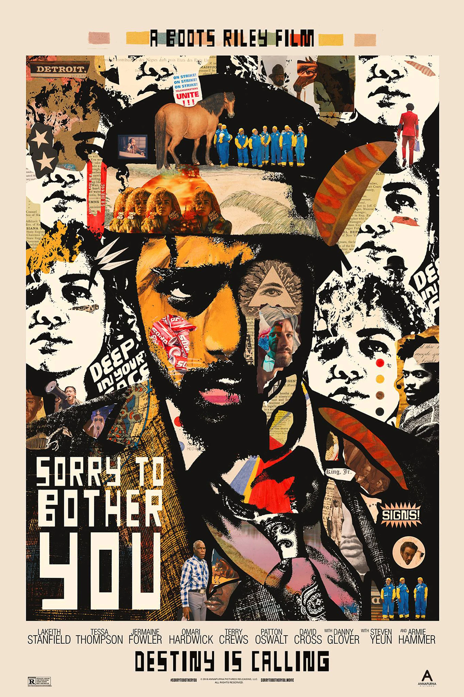
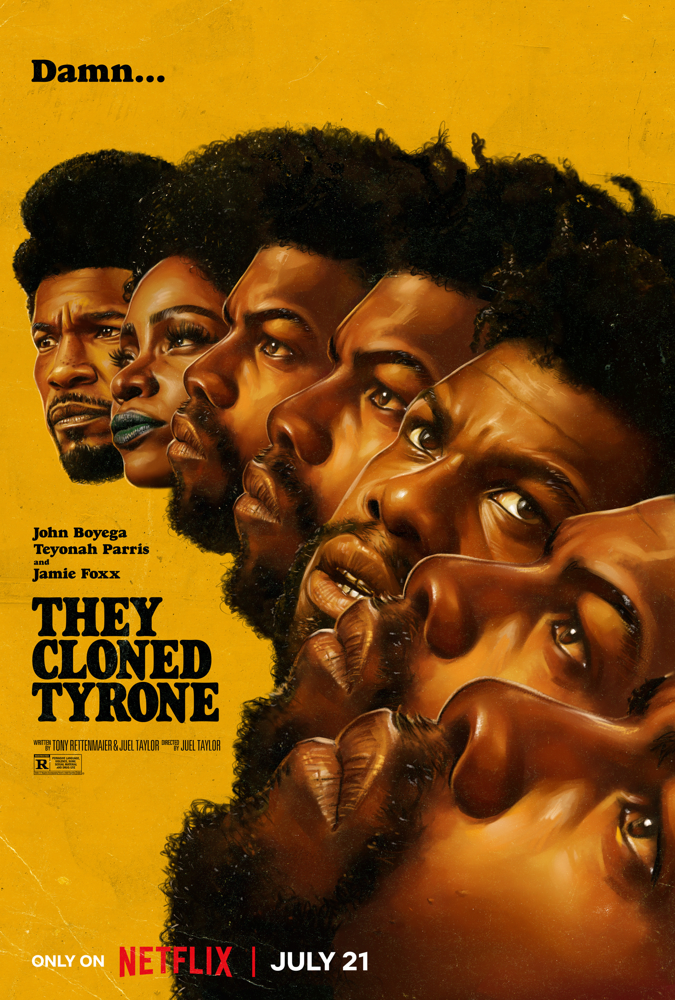

Best Things to do While On the Moon🌔
This page is meant for those who are bored or want to try something while being on the moon. Below will be some ideas to start off on.
If you are more into auditory experiences, here are stuff I recommend🎧.
- I highly recommend listening to Pink Floyd's "Dark Side of the Moon" album. If you have the opportunity, you can attend a light show. I personally like "The Great Gig in the Sky" in this album. I also like "Shine On You Crazy Diamond (Pts. 1-5)", this is just another song that is really good.
- Another song I highly recommend is Childish Gambino's "Me and Your Mama". The instrumentals in this song is truly impeccable. This was on repeat when I first visited the moon . I can write a whole essay analyzing this one song.
- Finally, I have to honor Kali Uchis's new album drop this month by listing "Heladito". My absolute favorite part of the song is the first 15 seconds. It sets the vibe, she is a phenomenal artist. Here is the album ORQUIDEAS so you too shall be blessed.
- Last super easy idea is to listen to any music with headphone in 8D.
If you are into tasty experiences🍉, I have a short list of amazing recommendations.
- Ripe, yellow pineapple🍍 in addition, a good mango🥠works too. Dice them up and it's ready to serve.
- Best drink ever would be a watermelon🉠slushie or a Coca Cola slushie🥤.
- A hand sized ice cream sandwich made with two crispy chocolate chip cookies from Tate's🪠with Baskin Robbins's Cookies 'n Cream.ğŸ¦
- Last idea, would be a super hot, crispy, cheesyyyy🧀 pizza from Domino's or any good pizza🍕.
Next recommendation is visual/films!👁️👁️
- Best...recommendation..."La La Land". The cinematography is so breathtaking. Every scene in the movie serves a purpose and is a beautiful tribute to film. The soundtrack is nothing short either. My favorite scenes are the dancing scence in front of the skyline view, the planetarium scene, and the "what-if" scene. The plot is so beautiful, it deserves to be seen multiple times.
- Interstellar will have you thinking you have a masters in Physics and can explain everything that happens in the movie. The ending will have you thinking a warped planet is normal and doesn't break physics. The soundtrack is equally amazing. My favorite is Hans Zimmer's "Cornfield Maze" piece.
- Watching "Sorry to Bother You" or "They Cloned Tyrone" will have you thinking of society's ills and how it is so prevelant around us. It will also have you thinking about how crazyy the story plots. Not to mention the soundtrack and over vibe (which is retro) of "They Cloned Tyrone" is so good. I had it on repeat on Spotify after I watched it.  
- I cannot forget "Spider-Man: Across the Spider-Verse". The first movie was already really good but they really elevated their skillset for this second movie with the visuals AND soundtrack. Metro Boomin really showcases his creativity with this soundtrack and so did the other artists as well.

Here are some other random things you can do on the moon.
- Learn how to juggle with the moon's gravity.
- Jump as high as you can.
- And...lift weights.